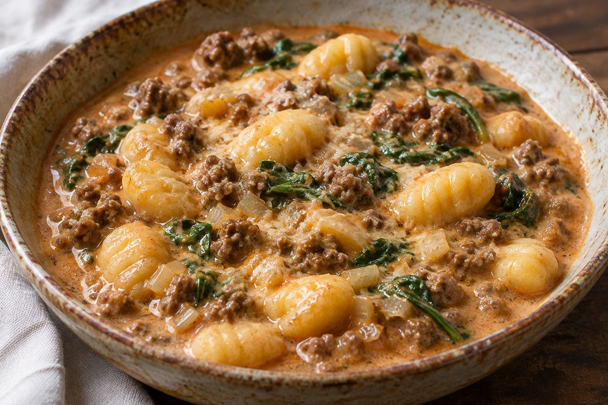

Cremiger Gnocchi-Eintopf mit Rinderhack und Spinat

Gnocchi-Eintopf mit Rinderhackfleisch, Blattspinat, Schlagsahne und Parmesan.
Ca. 4 Portionen
Zutaten
- 500 g Gnocchi
- 500 g Rinderhackfleisch
- 125 g Blattspinat
- 200 g Schlagsahne
- 600 ml Rinderbrühe oder Gemüsebrühe, bei Bedarf etwas mehr
- 2 EL Öl
- 1 Zwiebel
- 2 Knoblauchzehen
- 1 EL Tomatenmark
- 1 TL Majoran
- 1 TL Paprika, edelsüß
- 50 g frisch geriebener Parmesan
- Salz
- Pfeffer
- Optional zum Andicken: etwas Speisestärke und kaltes Wasser (Mengen nicht angegeben; im Zubereitungstext genannt)
Zubereitung
- Die Zwiebel fein würfeln und den Knoblauch fein hacken.
- Das Öl in einem großen Topf erhitzen und das Rinderhackfleisch darin krümelig anbraten.
- Die Zwiebel dazugeben und kurz mitbraten. Anschließend den Knoblauch hinzufügen und ebenfalls kurz anbraten.
- Das Tomatenmark einrühren und kurz mitrösten.
- Gewürze dazugeben und kurz mit anrösten. Mit Salz und Pfeffer würzen.
- Mit der Rinderbrühe ablöschen und die Schlagsahne dazugeben. Alles gut verrühren.
- Die Gnocchi direkt in den Eintopf geben und alles köcheln lassen.
- Den frisch geriebenen Parmesan und den Blattspinat dazugeben. Alles gut verrühren und kurz köcheln lassen, bis der Spinat zusammengefallen ist.
- Falls der Eintopf zu flüssig ist: Etwas Speisestärke mit kaltem Wasser glatt verrühren, in den Eintopf geben und unter Rühren kurz aufkochen lassen, bis die Soße die gewünschte Konsistenz erreicht hat.
Rezept nach den bereitgestellten Screenshots der Caption. Beschreibender Titel redaktionell vergeben, da kein Originaltitel sichtbar ist. Keine Zeitangaben vorhanden. Die optionale Speisestärke und das Wasser sind nur im Zubereitungstext genannt; Mengen fehlen. Der abgeschnittene persönliche Schlusskommentar wurde weggelassen.
Originalquelle: Instagram-Reel